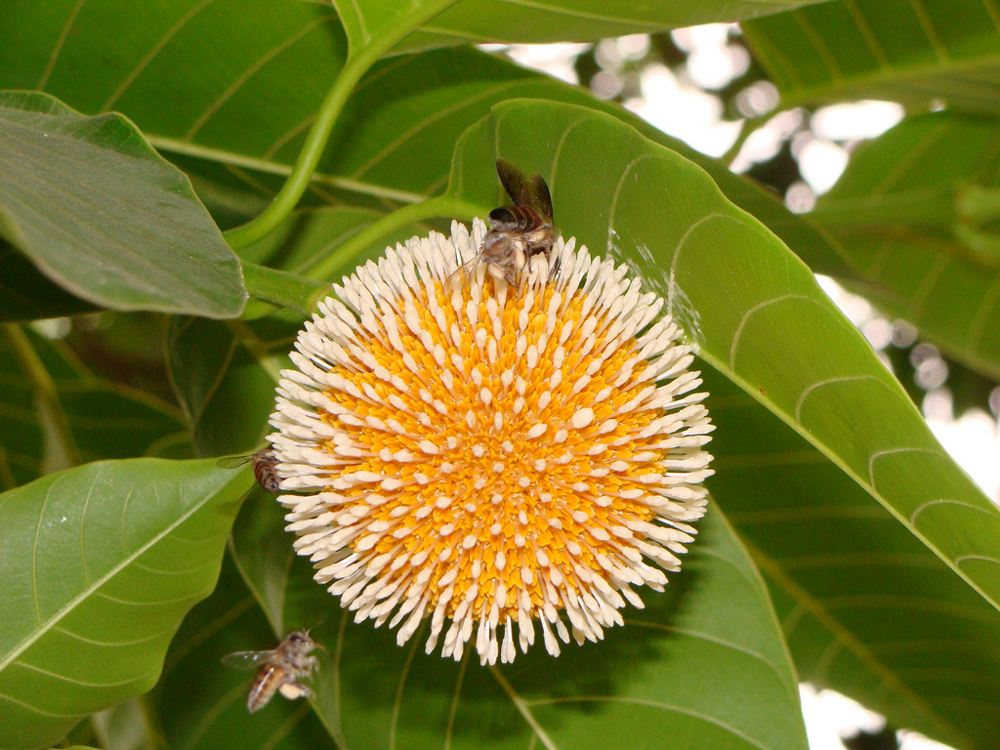

Overview of Kadamba
Kadamba – Anthocephalus cadamba is an Ayurvedic herb known for its tridoshahara (balances all three doshas), pain-relieving, and anti-inflammatory properties. It is used for various conditions including wound healing, diarrhea with bleeding, and renal stones.
Botanical Information
- Botanical Name: Anthocephalus cadamba
- Family: Rubiaceae
Regional Names
- Bengali: Kadamgach
- Gujarati: Kadamb
- Hindi: Kadam
- Tamil: Vellai Kadambam
- English: Burflower Tree
Classification
- Aacharya Charaka: Vedanasthapan, Sukrasodhana, Vamanopaga Gana
- Aacharya Sushruta: Nyagrodhadi Gana, Rodhradi Gana
- Aacharya Vagbhatta: Nyagrodhadi Gana
Morphology
External Morphology: 30-40 meter tall tree.
Useful Parts: Fruit, stem bark
Phytoconstituents
- Cadambine
- Pentosane
- Chryin
- Umbelliferone
- Adicardin
Rasa Panchak
- Rasa: Tikta (Bitter), Kashaya (Astringent)
- Guna: Ruksha (Dry), Guru (Heavy)
- Virya: Sita (Cool)
- Vipaka: Katu (Pungent after digestion)
Action
Action: Tridoshahara (Balances all three doshas), Vedanasthapana (Pain reliever)
Therapeutic Indications
- Sothahara (Anti-inflammatory)
- Vedanasthapan (Pain killer)
- Sukradoshahara (Treats semen disorders)
- Kasahara (Anti-cough)
- Vranahara (Wound-healing)
Therapeutic Uses
- Raktatisara: Decoction made with sunthi and Kadamba twak is beneficial in diarrhea with bleeding.
- Ashmari: Decoction of Kadamba is beneficial in renal stones.
- Daha: Juice of the fruit is beneficial in burning sensations.
Dosage
- Decoction: 50-100 ml
- Powder: 3-5 gm
Formulations
Adverse Effects
Adverse Effects: Not Known
Remedial Measures
Remedial Measures: Not required